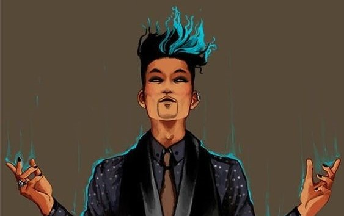

Magnus é descrito como extravagante, carismático e muitas vezes envolto em mistério, sempre usando roupas chamativas e tendo um estilo de vida glamoroso. Embora tenha uma aparência jovial, ele carrega consigo a sabedoria de séculos, tendo vivido durante várias épocas e testemunhado grandes eventos históricos no mundo dos Caçadores de Sombras e dos Seres do Submundo. Uma de suas falas famosas, que resume seu estado de espírito.
"Se for para me apaixonar, que seja por alguém especial" — Magnus Bane.
